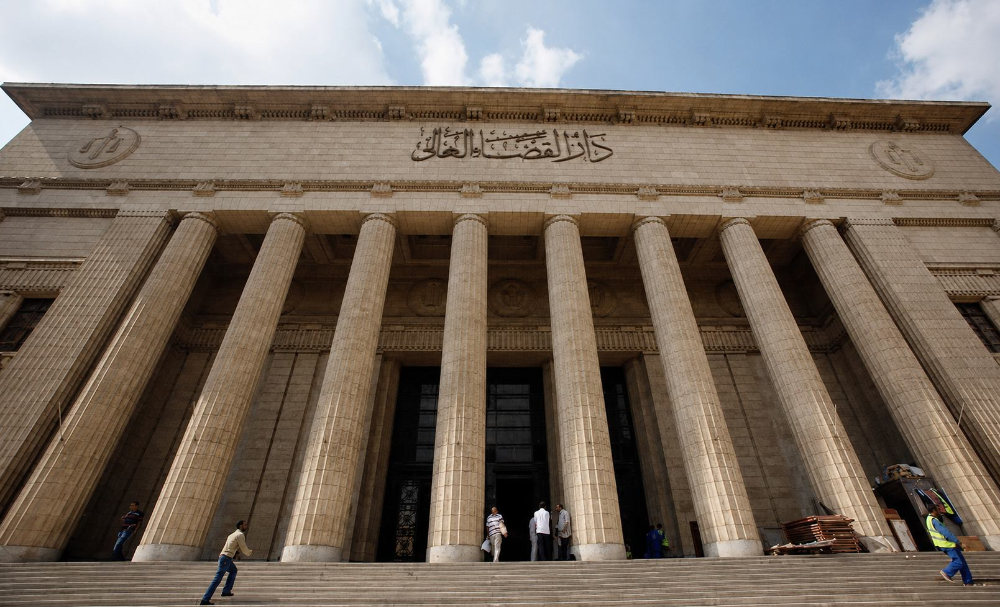

Criminal Cases – Giza Court
Representation before Giza Primary Court, Giza Appeal, Court of Cassation. Misdemeanors, felonies, appeals.
DetailsRepresentation before Giza Primary Court, Giza Appeal, Court of Cassation and Family Courts across Giza
Al-Ghonemy Law Firm represents clients before all Giza courts from its office at 6th of October – Al Hejaz Mall. We appear before Giza Primary Court, Giza Appeal, Court of Cassation and Family Courts across Giza.

Representation before Giza Primary Court, Giza Appeal, Court of Cassation and Family Courts in all Giza districts
Representation before Giza Primary Court, Giza Appeal, Court of Cassation. Misdemeanors, felonies, appeals.
DetailsDivorce, khula, alimony, custody, visitation before Family Courts (Dokki, Mohandessin, Agouza, Imbaba, Haram, Faisal).
DetailsHeir notification, sharia division, correction, estate disputes in Giza Family Courts.
DetailsContract notarization, land registry, ownership disputes, validation across Giza.
DetailsRepresentation before Giza Appeal (civil, commercial, criminal, family, administrative) and Court of Cassation. 19+ years.
DetailsCompany formation, commercial contracts, partnerships, commercial disputes for Giza businesses.
DetailsSale, lease, partnership, employment contracts, legal review across Giza.
DetailsElectronic blackmail, defamation, threats, hacking, data protection, Anti-Cybercrime Law.
Quick ConsultationUnfair dismissal, entitlements, accident compensation, work injuries, employment contracts in Giza.
Quick ConsultationRoad accident compensation, work injuries, material & moral damages, professional liability in Giza.
Quick ConsultationDaily appearance before Giza Primary Court, Giza Appeal, Court of Cassation and Family Courts
Civil, commercial, administrative, labor, lease, validation lawsuits
Appeals against Primary judgments: civil, commercial, criminal, family, administrative
Cassation appeals, 19+ years experience
Divorce, khula, alimony, custody, visitation, lineage
Personal status, alimony, custody, visitation, khula, lineage
Personal status, divorce, alimony, custody, visitation, khula, lineage
Comprehensive personal status for Imbaba residents
Personal status for Haram, Faisal, Talbiya residents
Personal status for Warraq, Bolak, Kerdasa, Osim
Personal status for centers and villages of Giza
Appeals against Giza Primary and Family Court judgments, strong representation
Cassation appeals against Giza Appeal judgments, 19+ years, latest judicial principles
نغطي جميع أحياء الجيزة الحضرية والريفية
Quick answers to most common inquiries from Giza residents
Our main office is at 6th of October – Al Hejaz Mall – Al-Hosary Square serving all Giza. We appear before all Giza courts: Primary, Appeal, Cassation, Family.
We appear before: Giza Primary Court, Giza Appeal, Court of Cassation, Family Courts in Giza (Dokki, Mohandessin, Agouza, Imbaba, Haram, Faisal, Warraq, Bolak).
Yes, we serve all Giza districts: Dokki, Mohandessin, Agouza, Imbaba, Haram, Faisal, Warraq, Bolak, Kerdasa, Osim, Atfih, Badrasheen.
Yes, Al-Ghonemy lawyers specialize before Giza Appeal and Court of Cassation. 19+ years experience in cassation and appeal.
Contact via WhatsApp 01126118276 (instant 24/7), phone 01003651199 (daily 5-10 PM), or our 6th of October office.
Yes, Al-Ghonemy lawyers specialize in Cassation appeals and regularly represent clients before Court of Cassation.
Yes, Al-Ghonemy specializes in inheritance & estates before Giza Family Courts: Heir notification, Sharia division.
Our 6th of October office is about 15-20 minutes by car from Giza Primary Court, Giza Appeal and Court of Cassation.
Giza Court, Giza Appeal, Court of Cassation, Family Courts – Specialized lawyers, 19+ years experience
01003651199 | 01126118276 | مكتب 6 أكتوبر: مول الحجاز - ميدان الحصري (يخدم الجيزة بالكامل)